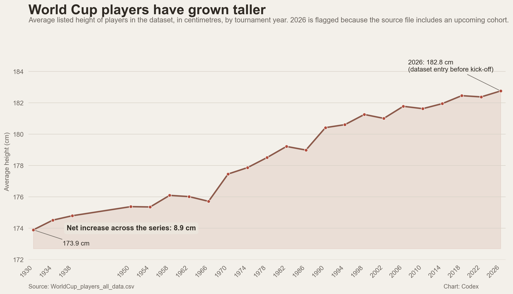
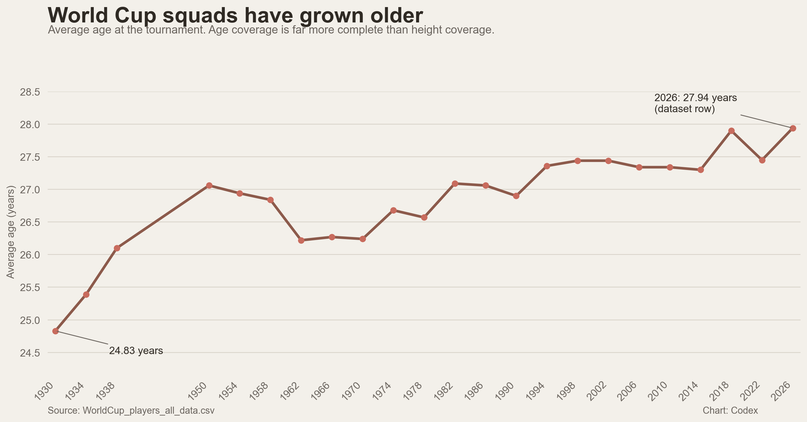
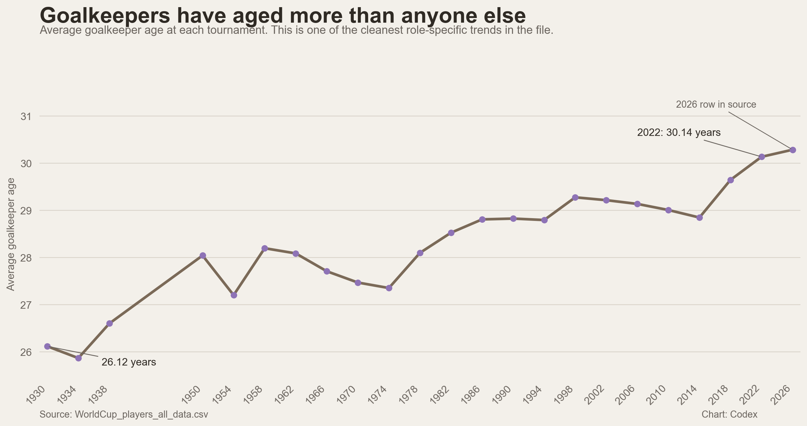
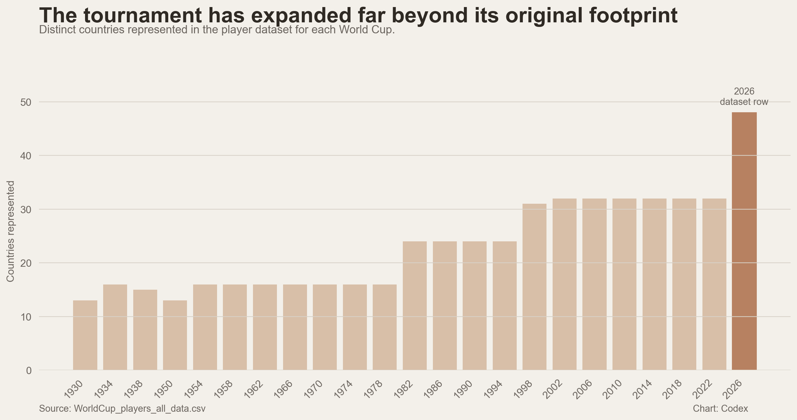
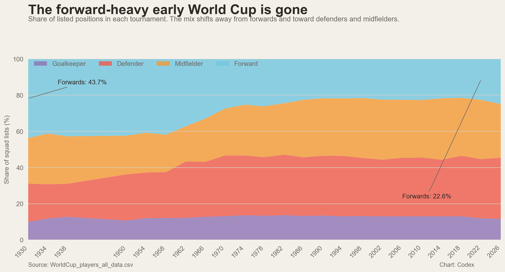
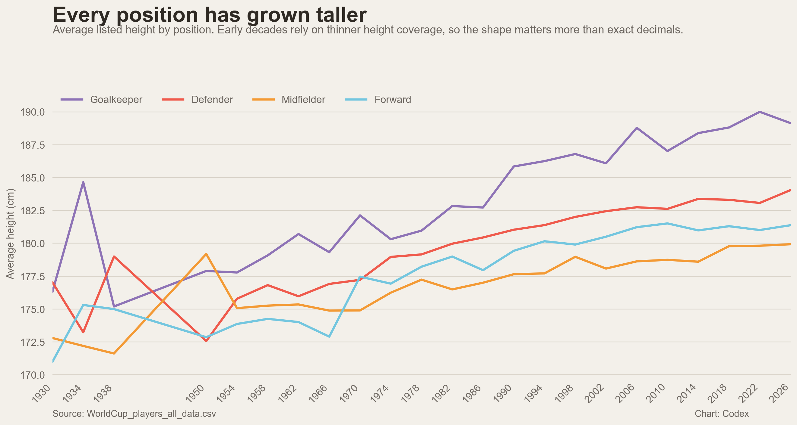
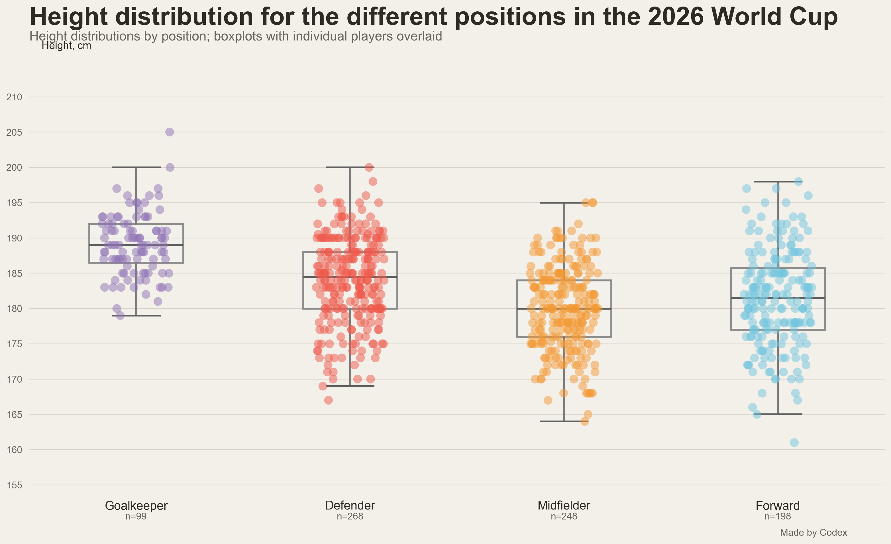

World Cup player trends, in one file
The sharpest headline is simple: the source file's 2026 cohort is both the tallest on record and, when rounded to one decimal place, tied with 2018 for the oldest average squad age. Average player height rises by 8.9 cm, or 5.1%, from 1930 to the 2026 row, while average age moves from 24.8 to 27.9 years and then mostly plateaus from 1994 onward.
Dataset note: the source file already includes a 2026 row even though the tournament start date in the same file is June 11, 2026. In this report, 2026 is treated as a dataset cohort, not completed tournament history.
1. Players have grown taller, but early height coverage is thin
The direction is clear enough. Average listed height rises from 173.9 cm in 1930 to 182.8 cm in the source file's 2026 row, a gain of 8.9 cm or 5.1%. The catch is coverage: only 28 of 222 player rows in 1930 include height, or 12.6%. By 2022 that becomes 826 of 831, or 99.4%.

2. Squads are older now
This is one of the cleaner findings in the file because age coverage is far stronger than height coverage. Average age climbs from 24.83 years in 1930 to 27.45 in 2022, with the dataset's 2026 row at 27.94. The more interesting twist is that the series mostly settles into a narrow band from 1994 onward rather than rising cleanly every cycle.

3. Goalkeepers have aged more than anyone else
The role-specific version is sharper. Average goalkeeper age goes from 26.12 years in 1930 to 30.14 in 2022. That supports a simple reading: elite keepers are staying useful later, and teams tolerate age in goal more than they do elsewhere.

| Tournament year | Average goalkeeper age | Goalkeeper rows |
|---|---|---|
| 1930 | 26.12 | 22 |
| 1982 | 28.53 | 72 |
| 2022 | 30.14 | 99 |
| 2026 dataset row | 30.29 | 145 |
4. The tournament has expanded dramatically
Any raw count story has to be read through tournament expansion. The dataset goes from 13 represented countries in 1930 to 48 in the 2026 row, with intermediate steps like 16 in 1954, 24 in 1982, 31 in 1998 and 32 in 2022. That changes the baseline for everything from player totals to positional depth.

5. The old forward-heavy squad mix has faded
The 1930 tournament looks like a different sport in squad construction terms. Forwards accounted for 43.7% of listed positions in 1930. By 2022 that drops to 22.6%, while defenders and midfielders each sit above 32%.

6. Every position has grown taller
This is the best follow-up to the headline height chart because it shows the pattern is broad rather than just a goalkeeper artifact. From 1930 to 2022, listed average height rises from 176.33 to 190.00 cm for goalkeepers, 177.03 to 183.07 for defenders, 172.80 to 179.82 for midfielders, and 171.00 to 181.01 for forwards.

7. The 2026 height spread by position looks exactly like you would expect, only more extreme
The positional hierarchy is blunt. Goalkeepers are tallest, defenders next, then forwards, then midfielders. In the 2026 row, the averages are 189.14 cm for goalkeepers, 184.05 for defenders, 181.38 for forwards, and 179.93 for midfielders.
